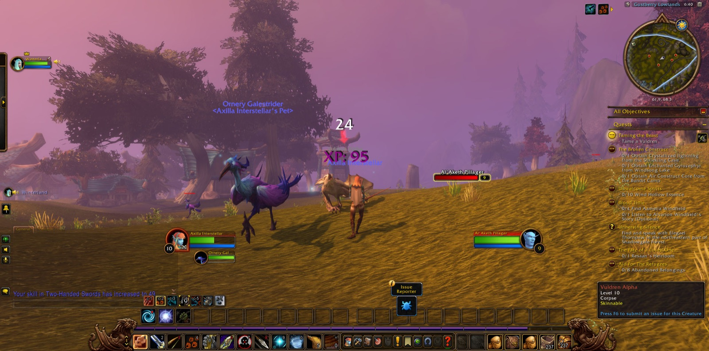
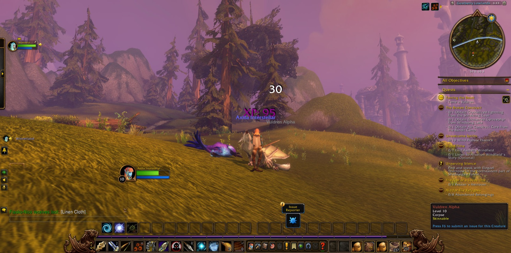
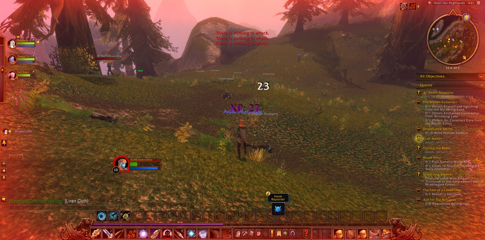

Axilla Interstellar came again to Valanaar on Zephras Isle, and there she was joined by Winterland, a hunter like herself, who would walk beside her from the first step of that road to the last. The road began badly, for Axilla fell in Valanaar before much was done; but she rose and went on, and soon turned her bow upon the Enchanted Skyhoppers until eight of them were exterminated and the errand called "Bugged" was seen through. With it she came into her tenth level, and a picture was taken to mark it. In Valanaar too she took up "Blood Tithe" and "Taming the Beast" and "Crab Season", and completed "The Grand Skyseer". For a short stretch of road Chuleta, a druid, kept her company, while she listened to Ayessa and so finished "A Grand Adventure", and heard what Riaani Nightwind had to say of "The Broken Construct".


Then she went out into the Gustberry Lowlands, where Bandit Highwaymen and Ornery Galestriders fell before her, and many pictures were taken along the way. She passed into the Shriekling Den and slew the Shriekling Fledglings there, and came out again, and went on into the Shen'dar Highlands and down to Windsong Lake. There the Windsong Crawlers were hunted until six portions of their meat were gathered for "Crab Season". Returning through the Highlands she took up "Al'Aketh Assassins", and in that work two more joined her: Fiasko, a druid, and Evil, a rogue. Together they made short work of it, and ten of the Al'Aketh Assassins were slain. Evil soon went his own way, and Fiasko walked with her back toward Valanaar before they too parted with courtesy.


In Valanaar the long errand of "Taming the Beast" was carried forward step by step, out into the Gustberry Lowlands and back again, until the Vuldren Alpha was overcome and the last of that errand was done. Then Axilla came into her eleventh level, and that too was set down in a picture; and "Training the Beast" was taken up and finished in the same breath. She returned to the Shriekling Den, and there she found the Crystallized lightning that Riaani Nightwind had asked for, and slew the Shriekling Matriarch.


From there her road led north, by the Shrine of Akir, into the Shadowgale Forest, which was new ground to her. It did not give her an easy welcome, and she wandered for a while between the forest and the shores of Windsong Lake before she stood again among the living. Yet she pressed on. "Unnerving Silence" was completed, and "Feathers for Binding" and "Unwanted and Unworthy" were taken up; a Shadowgale Shriekling was slain, and eight tufts of Lady's Tear Moss were gathered to complete "Tears of the Lady". Winterland was with her still at the end of it, and the Shadowgale Forest lay about them, its errands only half begun.




